Hệ thống dẫn động lái gồm nhiều chi tiết phối hợp để truyền lực từ vành tay lái đến cơ cấu lái và đến bánh xe dẫn hướng.
a. Vành tay lái
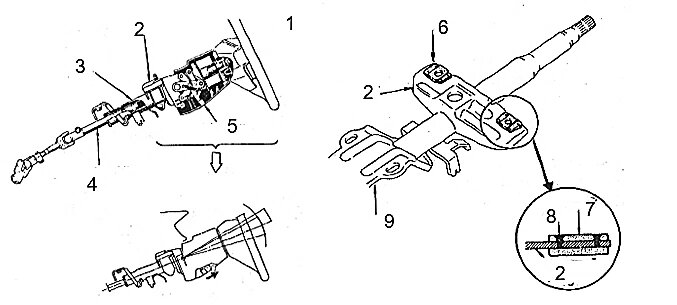
Hình 9.12. Trục và vành tay lái
1.Vành tay lái; 2. Giá đỡ dễ vỡ; 3. Ống trục lái; 4. Trục lái; 5. Cần nghiêng; 6. Tấm giữ; 7.Tấm giữ; 8. Chốt; 9. Ống trục lái.
Vành tay lái: Bộ phận điều khiển chính bố trí trong khoang lái, gắn với trục lái bằng then hoa hoặc bu-lông.
b. Trục lái
Trục lái (hình 9.13) là trục truyền lực trực tiếp từ vành tay lái đến cơ cấu lái. Gồm nhiều đoạn ghép nối với nhau. Trục trên: gắn với vành tay lái, thường có khớp lồng để co rút khi va chạm.
Khớp trượt: đảm bảo độ dài thay đổi linh hoạt.
Khớp chữ thập: giúp truyền mô-men lái dù trục bị lệch trục với hộp lái.
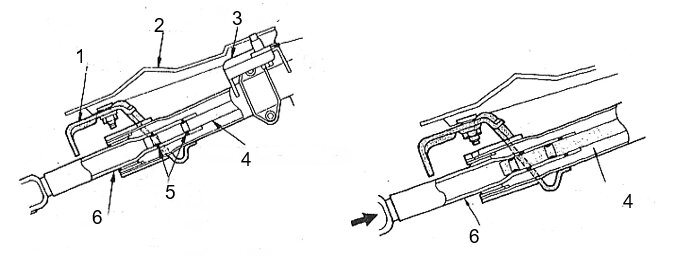
Hình 9.13. Kết cấu trục lái
1.Giá đỡ cong; 2. Thân xe; 3. Giá đỡ dễ vỡ; 4. Trục lái chính (phía trên); 5. Chốt nhựa; 6. Trục lái chính phía dưới
c. Trụ lái đứng (trục quay đứng)
Trụ lái đứng là trục chính quanh đó bánh xe dẫn hướng quay để đổi hướng (hình 9.14). Nó được lắp chặt vào cam quay và gắn với dầm cầu thông qua bạc trụ hoặc ổ bi đũa. Trụ đứng là một chi tiết cơ khí hình trụ, chịu tải trọng đứng và mô men quay, được lắp đặt ở đầu trục cầu trước. Cấu tạo bao gồm:
Thân trụ: Là thanh thép rỗng hoặc đặc, có đường kính và chiều dài phù hợp kết cấu cầu xe. Được tiện tròn chính xác và tôi cứng.
Đầu trụ trên - dưới: Có lỗ hoặc ngàm để lắp bạc lót, ổ bi hoặc khớp quay.
Cổ trụ quay: Liên kết với cam quay, truyền chuyển động từ hệ thống lái xuống bánh xe.
Gờ chắn dầu - mỡ: Ngăn chất bôi trơn rò rỉ và chống bụi.
Một trụ đứng kiểu lắp trên xe có hệ thống treo độc lập (hình 9.15):
Nếu là hệ thống tay đòn kép, trụ đứng có hai lỗ bắt rô-tuyn (hoặc bạc cao su) ở phía trên và dưới để kết nối với tay đòn trên và tay đòn dưới.
Nếu là hệ thống McPherson, trụ đứng gắn liền với chân phuộc giảm chấn phía trên và chỉ có một lỗ bắt tay đòn phía dưới.
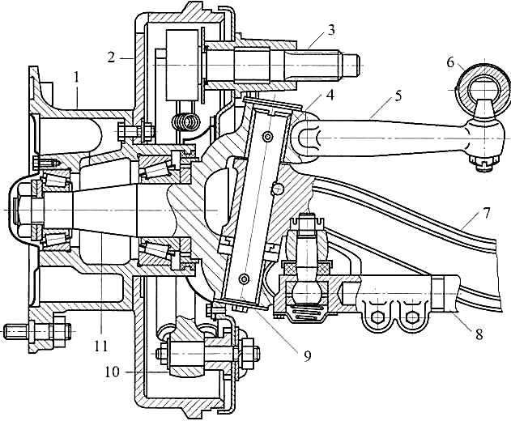
Hình 9.14. Lắp ghép cầu dẫn hướng không chủ động
1. Moay-ơ bánh xe; 2. Trống phanh; 3. Cam phanh; 4. Bạc lót trụ đứng; 5. Đòn quay ngang; 6. Đòn kéo dọc; 7. Dầm cầu; 8. Đòn ngang hình thang lái; 9. Trụ đứng; 10. Guốc phanh; 11. Cam quay.
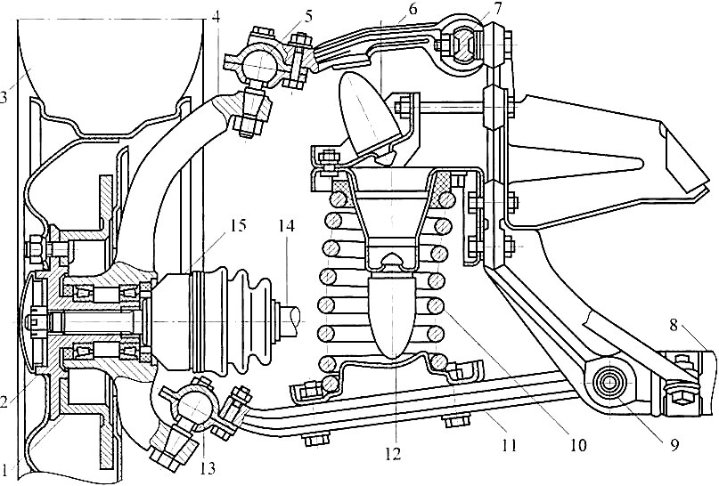
Hình 9.15. Hệ thống treo độc lập của bánh xe chủ động dẫn hướng
1. Đĩa phanh; 2. Moay-ơ bánh xe; 3. Bánh xe; 4. Đòn đứng; 5, 13. Khớp cầu; 6. Đòn trên; 7, 9. Khớp trụ; 8. Khung xe; 10. Lò xo; 11. Đòn dưới; 12. Ụ hạn chế; 14. Bán trục; 15. Khớp các đăng đồng tốc
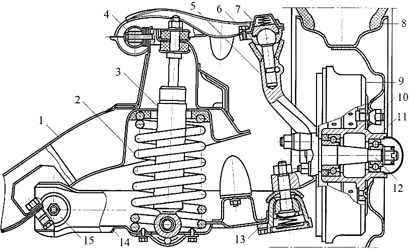
Hình 9.16. Hệ thống treo độc lập của bánh xe dẫn hướng không chủ động
1. Khung xe; 2. Lò xo; 3. Giảm chấn; 4, 15. Khớp trụ; 5. Đòn đứng; 6. Đòn trên; 7, 13. Khớp cầu; 8. Bánh xe; 9. Trống phanh; 10. Bu lông bánh xe; 11. Moay-ơ bánh xe; 12. Cam quay; 14. Đòn dưới.
d. Cam quay
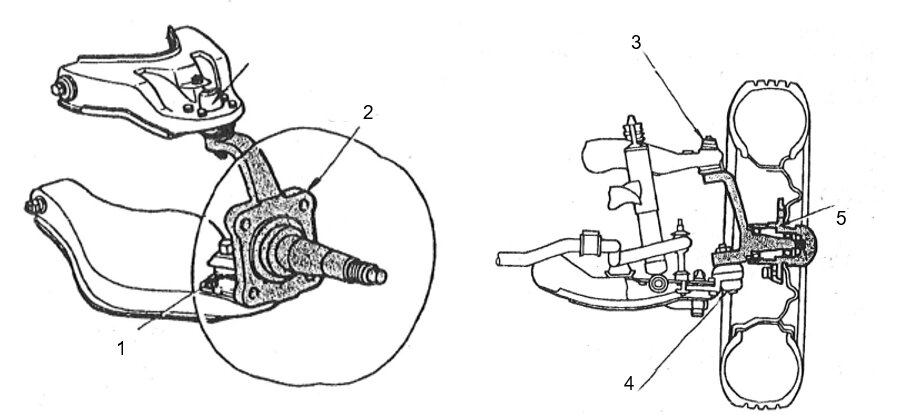
Hình 9.17. Cam quay
1. Khớp cầu; 2. Cam quay; 3. Gối đỡ trên; 4. Gối đỡ dưới; 5. Moay-ơ
Là bộ phận trung gian giữa trụ đứng và moay-ơ bánh xe, truyền chuyển động từ đòn quay sang bánh xe. Trên cam thường có tai để gắn khớp cầu hoặc đòn quay ngang.
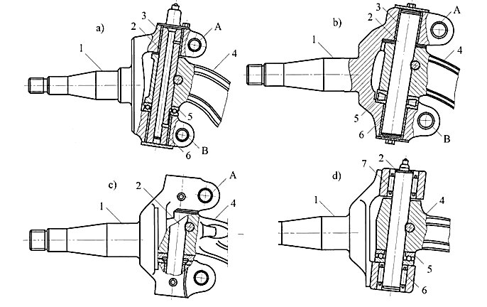
Hình 9.18. Các kiểu lắp ghép dầm cầu, trụ đứng và cam quay
1. Cam quay; 2. Trụ đứng; 3. Bạc; 4. Dầm cầu; 5. Ô bi đỡ; 6, 7. Ổ bi đũa.
Hình 9.18 thể hiện lắp ghép dầm cầu 4, trụ đứng 2 và cam quay 1. Trụ đứng được lắp chặt với dầm cầu và còn được cố định bằng chốt. Cam quay lắp với trụ đứng thông qua bạc (bạc 3 ở các hình a, b, c) hoặc ổ bi đũa (6 và 7 hình d). Trên cam quay 1 được bố trí các vị trí để lắp các chi tiết của dẫn động lái (hình a, b, c).
Trường hợp người lái ngồi bên trái (theo luật đi đường bên phải), vị trí A lắp với đòn quay ngang của dẫn động lái, đòn quay ngang nhận lực người lái từ vành tay lái truyền đến. Vị trí B để lắp với đòn bên của hình thang lái, dẫn động sang bánh xe phải. Trường hợp người lái ngồi bên phải (theo luật đi đường bên trái), điểm A nằm ở cam quay bên phải.
e. Moay-ơ bánh xe
Là bộ phận quay theo trục bánh xe, được gắn với trục láp (nếu cầu chủ động) hoặc tự do quay (nếu cầu bị động). Moay-ơ thường lắp ổ bi đôi.
Cấu tạo moay-ơ có thể thay đổi theo loại xe và cấu hình hệ thống treo, nhưng thường bao gồm các phần chính:
Thân moay-ơ: Dạng hình trụ rỗng, bằng thép đúc hoặc hợp kim chịu lực cao. Có lỗ trung tâm để lắp ổ bi và gờ mặt bích để bắt chặt với vành bánh xe bằng bu-lông.
Ổ bi bánh xe: Thường là ổ bi đôi hoặc ổ con lăn côn. Được ép vào thân trụ đứng hoặc gắn liền với moay-ơ theo dạng bạc moay-ơ tích hợp.
Trong các xe hiện đại có ABS hoặc hệ thống ổn định điện tử, moay-ơ thường tích hợp vòng từ hoặc vành răng để đo tốc độ quay.
f. Đòn quay đứng, đòn quay ngang, thanh kéo dọc và khớp cầu
- Đòn quay đứng thường nối trực tiếp với trục ra từ cơ cấu lái.
- Đòn quay ngang truyền lực quay sang cam quay thông qua khớp cầu.
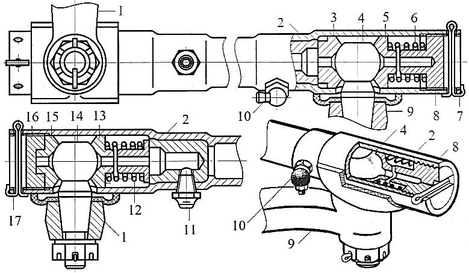
Hình 9.19. Lắp ghép đòn quay và đòn kéo dẫn động từ cơ cấu lái đến bánh xe dẫn hướng (1)
1, 9. Đòn quay; 2. Đòn kéo; 3, 5, 13, 15. Đế rô-tuyn; 4, 14. Rô-tuyn; 6, 12. Lò xo; 7, 17. Chốt hãm; 8, 16. Đai ốc; 10, 11. Vú mỡ.
Hình 9.19 thể hiện lắp ghép hai đòn quay và đòn kéo dẫn động từ cơ cấu lái đến bánh xe dẫn hướng của một xe tải trung bình. Do hai đòn quay (trên hình 9.19 là chi tiết 1 và chi tiết 9) quay trong hai mặt phẳng vuông góc với nhau nên các khớp nối giữa đòn quay và đòn kéo là khớp cầu. Khớp bao gồm rô-tuyn hình cầu 4 và 14; các để giữ rô-tuyn 3, 5, 13, 15 (mồi rô-tuyn có 2 đế); lò xo 6, 12 và đai ốc giữ 8, 16. Rô-tuyn, đế rô-tuyn, lò xo được lắp vào thân thanh kéo như hình vẽ. Lò xo có tác dụng luôn giữ cho các đế rô-tuyn áp sát vào rô-tuyn. Đai ốc 8, 16 giữ đế rô-tuyn được hãm bằng chốt hãm 7 và 17. Một phía của rô-tuyn được gia công dạng trụ côn và các đòn quay 1, 9 được lắp chặt vào đó. Trên hình 9.20 rô-tuyn 4 được lắp vuông góc với rô-tuyn 14.
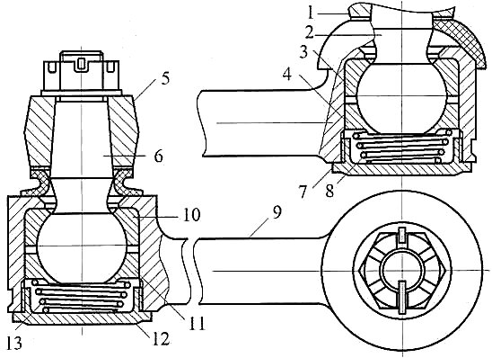
Hình 9.20. Lắp ghép đòn quay và đòn kéo dẫn động từ cơ cấu lái đến bánh xe dẫn hướng
1, 5. Đòn quay; 2,6. Rô-tuyn; 3, 4, 18, 11. Để rô-tuyn; 7, 12. Đai ốc; 8,13. Lò xo;
Thanh kéo dọc: Là thanh nối từ đòn quay đứng đến đòn quay ngang, di chuyển chủ yếu theo phương dọc của xe. Phần đầu có rô-tuyn để linh hoạt khi đánh lái.
g. Hình thang lái
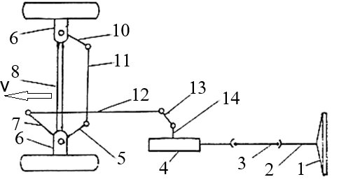
Hình 9.21 Sơ đồ bố trí chung hệ thống lái cơ khí
1. Vành tay lái; 2. Trục lái; 3. Trục các đăng; 4. Cơ cấu lái; 5,10. Đòn kéo bên; 6. Cam quay; 7. Đòn quay ngang; 8. Dầm cầu; 9. Cam quay; 11. Thanh lái ngang; 12. Đòn kéo dọc; 13. Đòn quay đứng; 14. Đòn quay đứng.
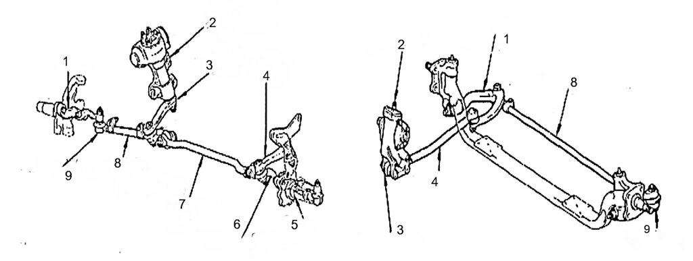
Hình 9.22. Dẫn động lái
1. Đòn cam lái; 2. Cơ cấu lái; 3. Đòn lắc; 4. Đòn đỡ; 5.Cam lái; 6,8. Thanh lái; 7. Thanh ngang; 9. Đầu thanh lái.
Hình thang lái là một thuật ngữ cơ bản trong hệ thống dẫn động lái, đề cập đến hình học bố trí các thanh liên kết giữa cơ cấu lái và hai bánh xe dẫn hướng, tạo thành một hình thang.
Cấu trúc hình thang lái gồm 4 điểm nối tạo thành 4 cạnh chính (hình 9. 21 và hình 9.22). Tại mỗi điểm nối giữa thanh có rô-tuyn (khớp cầu), cho phép các thanh chuyển động tương đối khi đánh lái và dao động theo hệ thống treo.